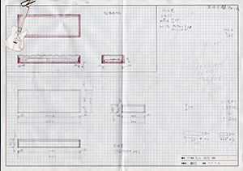

寄木細工ハードケース制作
寄木細工ハードケース制作
構想・設計
前回まで行っていた拭き漆ギターの制作が終了し。ここで制作は終了の予定ではありましたが、この際ケースも作ろうと考えギターケースも追加で制作することに決めました。ここまできたらもはや勢いです。
制作に向けてギター同様、ケースの形状などの選定と設計から行っていきます。
ケース形状、使用材料等検討
ギターのケースには一般的に、ソフトケース、ハードケースに２種類に分けられます。 ソフトケースは軽量のため楽器を容易に持ち運ぶことができます。
ハードケースは、その名の通りソフトケースより堅牢で耐久性に優れています。強度や持ち運びやすさを考慮し、今回はハードケースを作ることに決めました。問題の重量からくる持ち運びやすさの観点は、比較的軽い材料を選んで軽量化を図ります。
私は今回、ある程度耐久性等強度のあるケースを作ろうと考えていたため、自動的にハードケースの制作となりました。使用する材料は、軽量化も兼ねてラワン構造用合板を使います。
ギター採寸、設計図制作

普段は直感でものを作りがちなのですが、今回はスケールが大きく、失敗できないためまずはケースの三面図を描き、寸法も決めていきます。
製図は高校在学時に少し齧った程度ですが、凝ったものを描こうとしなくても大体の形と、それに伴った寸法が記載されていれば十分に使える設計図になると思います。設計図に加えて、ギターを縮小した紙を用意し、イメージしやすしています。（画像左上側）
↓次回から本格的にギターケースの制作に入っていきます↓